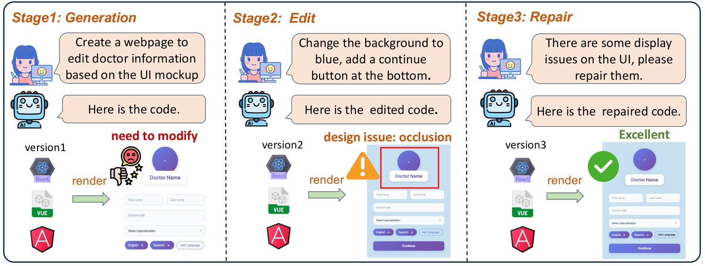
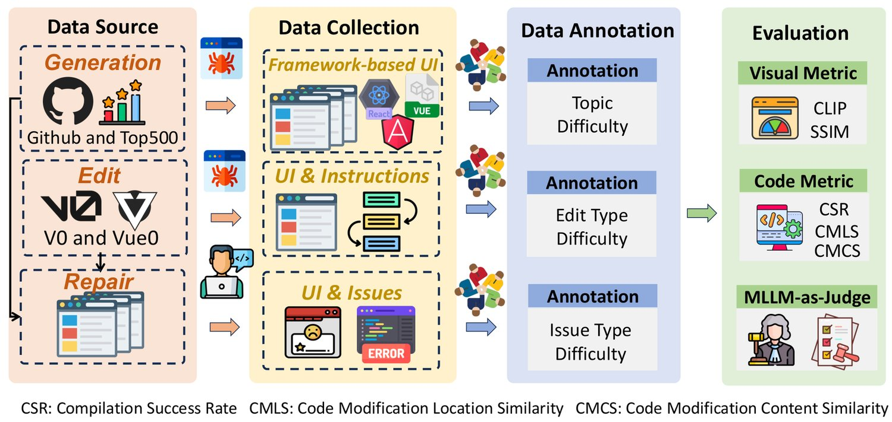
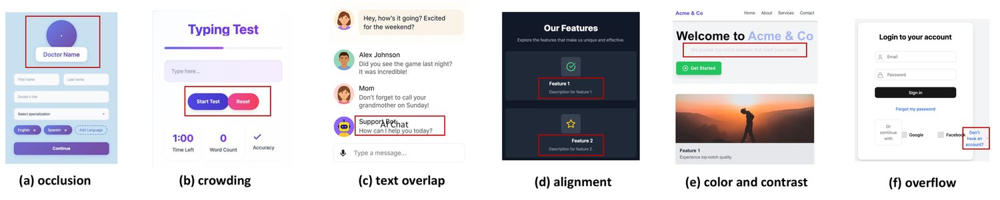
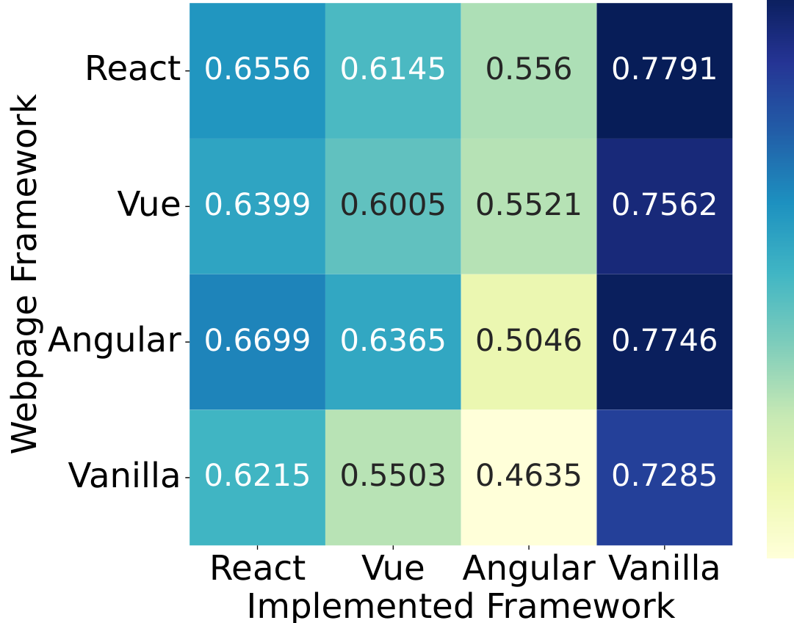
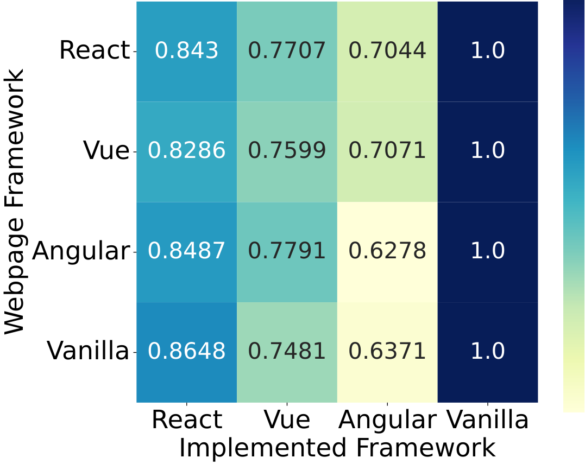

Multimodal Large Language Models (MLLMs) have demonstrated remarkable capabilities in automated front-end engineering, e.g., generating UI code from visual designs. However, existing front-end UI code generation benchmarks have the following limitations: (1) While framework-based development becomes predominant in modern front-end programming, current benchmarks fail to incorporate mainstream development frameworks. (2) Existing evaluations focus solely on the UI code generation task, whereas practical UI development involves several iterations, including refining editing, and repairing issues. (3) Current benchmarks employ unidimensional evaluation, lacking investigation into influencing factors like task difficulty, input context variations, and in-depth code-level analysis.
To bridge these gaps, we introduce DesignBench, a multi-framework, multi-task evaluation benchmark for assessing MLLMs’ capabilities in automated front-end engineering. DesignBench encompasses three widely-used UI frameworks (React, Vue, and Angular) alongside vanilla HTML/CSS, and evaluates on three essential front-end tasks (generation, edit, and repair) in real-world development workflows. DesignBench contains 900 webpage samples spanning over 11 topics, 9 edit types, and 6 issue categories, enabling detailed analysis of MLLM performance across multiple dimensions. Our systematic evaluation reveals critical insights into MLLMs’ framework-specific limitations, task-related bottlenecks, and performance variations under different conditions, providing guidance for future research in automated front-end development. Our code and data are available at https://github.com/WebPAI/DesignBench.
Converting webpage designs into functional UI code is a critical yet labor-intensive step in web development. MLLMs have demonstrated remarkable performance on visually rich code generation tasks (Yang et al., 2025; Liu et al., 2025; Zhang et al., 2025; Li et al., 2024; Chen et al., 2020; Tang et al., 2025), creating new opportunities for automated design-to-code conversion that replicates webpage elements, layouts, text, and colors.
Several benchmarks have been proposed to evaluate MLLMs on front-end code generation. These benchmarks typically involve either synthesizing webpage code via LLMs (e.g., WebSight (Laurençon et al., 2024) and Web2Code (Yun et al., 2024)), or curating code by cleaning real-world webpages (e.g., Webcode2M (Gui et al., 2025) and Design2Code (Si et al., 2024)). However, while these evaluation benchmarks are effective in measuring certain MLLM capabilities, they do not adequately represent the complex challenges faced by developers in real-world development scenarios.
(1) Lack of front-end framework integration. Current benchmarks fail to incorporate front-end frameworks, such as React, Vue, and Angular, which are integral to modern web development (as indicated in 2025 trends (Raju, 2025)). Consequently, MLLMs’ capabilities for practical framework-based website development remain unexplored.
(2) Insufficient task coverage. Existing benchmarks inadequately cover the comprehensive spectrum of front-end development tasks. As illustrated in Fig. 1, development encompasses not only initial code generation from UI designs, but also iterative code editing for design refinement and repairing design-related issues (Liu et al., 2020; Liu et al., 2022). However, current evaluations focus exclusively on the generation phase, neglecting the critical edit and repair phases.

(3) Limited evaluation dimensions. Most existing studies assess the overall quality of the generated webpage, lacking a detailed, multi-dimensional analysis of MLLM performance. Such an analysis could consider varying difficulty levels, input contexts, and code-level attributes like correctness and reusability. The comprehensive evaluation is crucial for identifying strengths and weaknesses of MLLMs, thereby fostering more reliable models for practical deployment.
To address these limitations, we propose DesignBench, a comprehensive multi-framework multi-task benchmark for evaluating MLLMs across multiple dimensions. DesignBench covers three popular front-end frameworks (React, Vue, Angular) and encompasses three key tasks: design generation, edit, and repair. The benchmark contains 900 webpage samples spanning more than 11 topics, 9 edit types, and 6 issue categories, enabling detailed analysis of MLLM performance across difficulty levels, context, and code dimensions.
Our extensive experiments yield several key findings: (1) Framework-specific limitations. MLLMs exhibit substantially lower performance in framework-based development compared to vanilla HTML/CSS. They struggle with framework-specific syntax, such as JSX parsing (React), template syntax (Vue), and TypeScript architecture (Angular). Critically, these models fail to effectively leverage framework features and component-based paradigms, resulting in diminished code reusability. (2) Task-specific bottlenecks. Distinct performance bottlenecks were identified across the three core development tasks. Design generation task suffers from visual rendering inaccuracies and compilation errors, while design editing and repair tasks are primarily constrained by shortcomings in code localization and UI issue identification capabilities. (3) Performance variability under different conditions. MLLM efficacy significantly degrades under more challenging conditions, including large UI images for generation, complex instructions for editing, and severe UI issues for repair. Notably, an input context analysis on design edit and repair tasks reveals that code-only inputs consistently outperform image-only inputs. Multimodal combinations provide minimal additional improvement, suggesting that code representations convey more precise semantic information for these modification tasks than visual inputs.
| Benchmark | Sample | Source | Framework | Task | Dimension |
|---|---|---|---|---|---|
| Pix2code (Beltramelli, 2018) | 1742 | Synthetic | Vanilla | Generation | ✗ |
| WebSight (Laurençon et al., 2024) | 823K | Synthetic | Vanilla | Generation | ✗ |
| Web2Code (Gui et al., 2024) | 60K | Synthetic | Vanilla | Generation | ✗ |
| WebCode2M (Gui et al., 2025) | 20K | Real-world | Vanilla | Generation | ✗ |
| Design2Code (Si et al., 2024) | 484 | Real-world | Vanilla | Generation | ✗ |
| DesignBench | 900 | Real-world | Vanilla/React/Vue/Angular | Generation/Edit/Repair | Difficulty/Context/Code/Failure Type |
Our main contributions are summarized as follows:
We introduce the first multi-framework, multi-task benchmark for evaluating MLLMs’ capabilities in automated front-end engineering across HTML/CSS, React, Vue, and Angular frameworks.
We conduct an extensive evaluation of nine leading MLLMs across three fundamental tasks. The analysis considers multiple dimensions, including task difficulty (visual complexity, instruction complexity, and issue severity), input context modalities (code-only, image-only, and multimodal), and code metrics (correctness and reusability).
We reveal key insights into MLLMs’ framework-specific limitations, identify task-dependent performance bottlenecks, characterize performance variations under diverse conditions and identify 22 types of failure of the three tasks. These results provide important guidance for future research and practice in front-end development.
Web application front-end development process includes the following stages: (1) Design stage: designers create high-fidelity mock-ups using prototyping tools such as Sketch (38) and Axure (5) during design stage. (2) Development stage: it involves transforming the design concepts into a functional application through coding. The development stage typically consists of the implementation of the GUI and the underlying functionalities. As shown in Fig. 1, the developer first prompts the MLLM to generate the front-end code based on the UI-Mockup. However, the version one code did not fully comply with the UI-Mockup. Then the user asked MLLM to edit the code to change the background color and add buttons to generate version two. Then during the actual deployment process, the front-end engineer found a display issue on the UI, that is, a collision between the avatar and the name, and asked MLLM to fix it and generate version three code.
Front-end frameworks are collections of pre-written, reusable code that provide a foundation for building the user interface of a website. These frameworks can save time and improve the quality of the final product by providing a standardized set of components and templates for front-end development. In 2025, React, Vue, and Angular have emerged as the predominant frameworks in web development (Raju, 2025), with 39.5%, 15.4%, and 17.1% popularity (Krotoff, 2024), respectively.
UI code generation techniques fall into three categories: Deep Learning (DL) based methods, Computer Vision (CV) based methods, and Multimodal Large Language Model (MLLM) based methods. (1) DL-based methods: (Aşıroğlu et al., 2019; Cizotto et al., 2023; Moran et al., 2018; Xu et al., 2021; Chen et al., 2018) leverages CNNs to automatically prototype software GUIs. Pix2code (Beltramelli, 2018) utilizes CNNs and LSTM to extract features from GUI images to generate a domain-specific language (DSL). (Chen et al., 2022) implements an encoder-decoder framework with an attention mechanism to generate the DSL. (2) CV-based methods: Sketch2Code (Jain et al., 2019) inputs hand-drawn sketches into object detection models to learn the object representation, which is read by the UI parser to generate code for targeted platforms. REMAUI (Nguyen and Csallner, 2015) identifies user interface elements via optical character recognition (OCR) techniques and then infers a suitable user interface hierarchy and exports the results as source code. (3) MLLM-based methods (Lu et al., 2025; Wan et al., 2025b; Zhou et al., 2025; Yuan et al., 2025; Wan et al., 2025a; Xiao et al., 2025; Xiao et al., 2026; Dang et al., 2025): to solve the element omission distortion and misarrangement problems during UI code generation, DCGen (Wan et al., 2025b) proposes a divide-and-conquer-based approach to generate the code of the submodules separately and then assemble them to construct the full webpage based on MLLMs. DeclarUI (Zhou et al., 2025) applies the element segmentation method to accurately generate elements and page transition graphs to prompt MLLMs to generate mobile app UI with jump logic. EfficientUICoder (Xiao et al., 2025) accelerates UI code generation by input and output token compression. ComUICoder (Xiao et al., 2026) apply semantic-aware segmentation and merging methods for reusable UI code generation. While prior works achieve decent performance in UI-to-code, none of them address the conventional framework-based development and other essential front-end procedures like design edit and repair.
Many benchmarks (Gu et al., 2024; Lam et al., 2025; Jain et al., 2024; Zhuo et al., 2024) have been proposed to evaluate the code generation, understanding and reasoning capabilities of LLMs, but there are only a limited number of benchmarks for UI code. To improve MLLMs’ UI-to-Code capabilities, Pix2code introduced a domain-specific language (DSL) and leveraged CNN and LSTM architectures to translate UI mockups into DSL code. However, due to the inherent limitations of DSL approaches, Pix2code suffers from poor scalability and limited real-world applicability. WebSight advanced the field by synthesizing high-quality HTML code for training, while Web2Code (Yun et al., 2024) proposed the Webpage Code Generation Benchmark (WCGB) to systematically evaluate MLLMs’ HTML parsing capabilities. Despite these contributions, both benchmarks rely on synthetic data, which may not capture the complexity and variability of real-world web development scenarios. Design2Code (Si et al., 2024) addressed this limitation by manually curating 484 authentic web pages from the Common Crawl dataset, constructing the first real-world benchmark for design-to-code evaluation. Building upon this foundation, WebCode2M (Gui et al., 2025) significantly expanded the scale with 20,000 samples, providing both comprehensive training data for model development and robust test sets for evaluation. Other Benchmarks like Interaction2Code (Xiao et al., 2024) and MRWeb (Wan et al., 2024) mainly focus on the interactive and multi-page web application generation, which is out of our scope.
Table 1 presents a comparison between existing benchmarks and our, in terms of the size, collection method, framework, target tasks, and evaluation dimension. DesignBench is distinct in incorporating varied front-end frameworks, multiple tasks, and diverse evaluation dimensions.
As shown in Fig. 1, the automated front-end development mainly contains the following three tasks: “Design Generation”, “Design Edit” and “Design Repair”.
Design Generation (). The objective of design generation is to generate expected code based on the UI Mockups. Formally, given a UI design image , the task aims to generate corresponding UI code such that . The input contains the UI design image , and the output is the UI code that accurately reproduces the visual layout and styling.
Design Edit (). The goal of the design edit is to generate front-end code that complies with user modification instructions. Given the original UI design image , original UI code , and user instruction described in natural language, the task produces modified code such that . The input contains the original UI design image , original UI code , and user instruction , while the output is the updated code incorporating the requested modifications.
Design Repair (). The goal of the design repair is to repair the UI code with display issues. Given the problematic UI code , the problematic UI image , the task generates repaired UI code such that . The input contains the problematic UI code and image , the output is the repaired code that resolves visual design issues.

Design Generation. For websites developed by frameworks, we collect samples from GitHub and the top 500 globally visited websites. Existing reports (Raju, 2025; Krotoff, 2024) show that the three most popular front-end development frameworks are React, Vue, and Angular, so we collect data for these three frameworks to build our benchmark. (1) Github projects. We search for “React projects”, “Vue projects” and “Angular projects” to get a summary list of web projects with different frameworks, then we identify 152 popular projects with deployed links and higher star counts. These projects represent various real-world website uses, ranging from commercial product front-end websites to blogs, with 4055 average star counts and an average of 996 forks. Their popularity has proven their usefulness and quality. (2) Top 500 globally visited websites. These websites are ranked by Moz (42), and we collect 158 webpages that adopt frameworks as our dataset.
For websites without applying frameworks, we sample 120 webpages with different lengths from the webcode2m dataset (Gui et al., 2025). Ultimately, we compile a dataset consisting of 430 webpages. After getting the link of the webpage, we apply single-file tool (Lormeau, 2023) to save the webpage as a stand-alone file, then replace the images in the web page with placeholders, and finally use selenium (Selenium, 2025) to take screenshots for constructing the input design image for task .
Design Edit. To obtain real-world user instructions for UI design modification, we crawl 541 React-based projects from Vercel’s V0 platform (43) and 1,349 Vue-based projects from Vue0 (44). These projects contain comprehensive interaction histories, including user instructions and corresponding UI code implementations.
We first filter the projects that can compile successfully with at least two iteration rounds. For each project with consecutive editing steps and , we construct evaluation pairs where the input consists of the previous version’s code , rendered UI image , and the user instruction that describes the desired modifications. The ground truth comprises the updated code and its corresponding rendered UI image that implements the requested changes.
However, some edit steps feature ambiguous user instructions or poorly UI modifications that fail to satisfy the intended requirements (here11 1 https://github.com/WebPAI/DesignBench/blob/main/assets/Unclear_Failed_Examples.md are some bad cases). To filter out low-quality samples, we employ five PhD students with three years of front-end development experience to conduct a comprehensive assessment.
Specifically, the annotators classify user instructions into three levels of clarity: clear, moderate, and ambiguous, based on detailed assessment of instruction specificity, actionability, and comprehensibility. Similarly, they evaluate the quality of modified UI and categorize them into terrible, good, and excellent based on how well the changes align with the given instructions. The detailed annotation guidelines are in (Team, ). The final classifications for both instruction clarity and UI modification effectiveness are determined through a majority voting process among the annotators.
Finally, we curate 359 high-quality React and Vue samples that receive clear instruction ratings and excellent modification quality scores. To obtain Angular and vanilla HTML/CSS samples, we randomly select 146 samples from this curated set and translate them into Angular and vanilla HTML/CSS code implementations using GPT-4o (OpenAI, 2024). Following the automated translation, the same five PhD students verify the correctness of the translated implementations, and make necessary modifications to ensure the code meet users’ instructions.
Design Repair. After collecting the webpages of the above two tasks, the five PhD students filter the samples with design issues. They follow comprehensive guidelines to identify display issues, including: (1) Layout issues such as misaligned elements and incorrect positioning; (2) Visual inconsistencies including improper spacing, incorrect font sizes, or color scheme violations; (3) Component rendering problems such as missing elements, overlapping content, or distorted images.
Finally, we get 111 webpages with problematic UI code and image . To obtain the repaired code for evaluation, 111 webpages are evenly assigned to the five PhD students to manually fix the issues. Each student spent about 5 hours to complete the repair of all assigned samples. The detailed annotation guidelines of these three tasks are in our repo22 2 https://github.com/WebPAI/DesignBench/blob/main/assets/Guideline.md.

Design Generation. The annotators are employed to annotate the topics of the webpages based on their functions.
Design Edit. The annotators are instructed to annotate both the type and difficulty level of UI modifications. The modification type encompasses two dimensions: the operation type and the corresponding UI attribute type being adjusted. The operation types include three fundamental categories: Add (introducing new UI elements), Change (modifying elements), and Delete (removing elements). The UI attribute types subject to adjustment comprise six main categories: text (including content, font, and typography modifications), color (encompassing background colors, text colors, and accent colors), position (spatial arrangement and layout adjustments), size (dimensional scaling and resizing operations), shape (geometric modifications and structural changes), and component-level (holistic modifications affecting entire UI components). The difficulty level reflects several factors, primarily the number of UI elements that require adjustment, the complexity of the interdependencies between modified elements, and the scope of cascading changes required to maintain design consistency and functionality throughout the interface.
Design Repair. The annotators are employed to annotate the UI issues. After collecting the webpages with display issues, we first randomly select 25% samples for analysis and then discuss, revise, and refine the UI issue type until everyone reaches a consensus. During annotating new data, if encountering a new issue type, annotators will communicate and update issue type in time to guide subsequent annotations. Finally, we classify 6 types of UI display issues as follows:
Occlusion. Elements are hidden or partially covered by other elements, making content inaccessible or invisible to users. This includes overlapping components, modal dialogs blocking content, or elements positioned behind others. As shown in Fig. 3(a). The “Doctor Name” box partially covers the portrait frame.
Crowding. Too many elements are packed into a small space without adequate spacing, making the interface feel cluttered and difficult to navigate. Fig. 3(b) shows an example that the “Start Test” and “Reset” buttons are tightly packed together.
Text overlap. Text content overlaps with other text or UI elements, making it unreadable or causing visual confusion. Fig. 3(c) shows that the “AI Chat” text and “Support Bot” text are overlapped.
Alignment. Elements are not properly aligned with each other or the overall layout grid, creating a disorganized appearance. As shown in Fig. 3(d), the “Feature 1” and “Feature 2” titles are not aligned with icons.
Color and contrast. Poor color choices that affect readability or accessibility, including insufficient contrast between text and background, or color combinations that are difficult for users with visual impairments to distinguish. As illustrated in Fig. 3(e), the text color and background color are too close to each other, making it difficult to distinguish.
Overflow. Content extends beyond its intended container boundaries, causing horizontal scrollbars, cut-off text, or elements appearing outside their designated areas. For example, the text “Don’t have an account” exceeds the login container.
Table 2 presents the sample counts of the three tasks with three frameworks, the Vanilla denotes the webpage developed by vanilla HTML/CSS.
| Framework | Design Generation | DesignEdit | Design Repair |
|---|---|---|---|
| React | 109 | 108 | 28 |
| Vue | 118 | 105 | 27 |
| Angular | 83 | 66 | 28 |
| Vanilla | 120 | 80 | 28 |
| Total | 430 | 359 | 111 |
Fig. 4(a) shows that DesignBench covers a diverse range of web topics with more than 11 types, including information, homepage, tool, product, news, and so on. This extensive topic coverage demonstrates that DesignBench encompasses a broad range of aspects of digital interface design, ensuring comprehensive evaluation across different domain requirements.
Fig. 4 shows the distribution of the edit type of design edit tasks. The operation distribution reveals three main categories: Change (55.8%), Add (38.1%), and Delete (6.1%). The corresponding visual modifications encompass diverse types, including component-level changes (27.9%), text modifications (17.1%), position adjustments (16.0%), color alterations (15.2%), shape modifications (13.4%), and size adjustments (10.4%), indicating that design edit tasks cover a broad spectrum of modification requirements.
Fig. 4(d) shows the distribution of the UI issues. The issue types span multiple dimensions with alignment being most prevalent (42.2%), followed by crowding (18.7%), occlusion (18.1%), overflow (11.4%), and other visual defects. This wide range of issue types demonstrates that design repair tasks address comprehensive quality assurance across multiple design issues dimensions.
The simplified prompts for the three tasks are illustrated in Fig.5, with detailed prompts available in our code (Team, ). Our prompts are designed with the following structure: (1) background description: a concise scene setting statement (“You are a senior vue/react/angular developer", "You are tasked with generating/editting/repairing") primes the model for the correct role and task description; (2) detailed and specific task requirements: For design generation, exactly reproduce the screenshot: fonts, colors, layout, spacing. For design edit, surgically alter only the elements specified in the natural-language instruction while leaving all other visuals untouched. For design repair, identify and correct the listed UI defects (occlusion, crowding, overlap, alignment, color/contrast, overflow). (3) framework-specific coding conventions: the prompts guide the model to import available UI components and follow framework-specific coding conventions, with a generic example to reduce ambiguity; (4) output format instructions and examples, each prompt includes strict output format requirements to ensure that the generated code can be reliably extracted and evaluated.
The studied MLLMs are listed in Table 4. We select six state-of-the-art LLMs that have been widely explored in multimodal tasks, three from open-source models, namely Pixtral (Agrawal et al., 2024), Qwen (Bai et al., 2025), and LLama (Meta, 2024), three from commercial models like Gemini (Google, 2024), GPT (OpenAI, 2024) and Claude (Anthropic, 2024). In configuring the MLLM models, we set the temperature to 0 and the maximum number of tokens output as the upper limit of MLLMs’ maximum output token. All other parameters are kept at their default settings. The detailed prompts of the three tasks are available in our code repository (Team, ). The entire benchmark evaluation incurs an average API cost of $52 per model on average. The average processing times per sample with a single thread, are 49 seconds for generation, 29 seconds for editing, and 25 seconds for repair, respectively.
First, in terms of the data source, we review the technical reports and training datasets of open source MLLMs. The training datasets for Qwen (Bai et al., 2025), Pixtral (Agrawal et al., 2024) and LLama (Meta, 2024) includes image captions, interleaved image-text data, optical character recognition (OCR) data, visual knowledge, crawling plain text and web document for Q&A, but not web html code. Furthermore, data leakage is particularly unlikely for design edit and design repair, because for design edit task, the training datasets don’t contain “<instruction, image, react/vue/angular/html code>” triple corpora. For design repair, there is no ground-truth repair labels are publicly available, as the benchmark is generated and verified by our annotators. To confirm that MLLMs are not “cheating” by memorizing and reproducing the original webpage code, we measure the BLEU score (Papineni et al., 2002) between the generated and original webpage code in the following table. The low BLEU score indicates that the model generates code from the design images rather than directly copying the original webpage.
| Claude-3.7 | GPT-4o | Gemini-2.0 | Llama-90B | Llama-11B | Pixtral-124B | Pixtral-12B | Qwen-72B | Qwen-7B |
| 0.1531 | 0.1318 | 0.1200 | 0.0771 | 0.0562 | 0.1117 | 0.1151 | 0.1338 | 0.0907 |
Visual Metrics. (1) CLIP (Radford et al., 2021) is applied to measure the semantic similarity between the generated and original webpages. (2) SSIM (Wang et al., 2004) (Structural Similarity Index Measure) score is applied to calculate the structure similarity. It evaluates the layout and compositional accuracy, emphasizing the spatial arrangement and structural similarities between the generated and original webpages.
Code Metrics. (1) Compilation Success Rate (CSR). This metric represents the percentage of generated code that compiles successfully without errors. Assume that the total number of samples is N and the number of samples compiled successfully is S, then . (2) Code Modification Location Similarity (CMLS). We employ the Jaccard similarity (Thada and Jaglan, 2013) to quantify the precision of code modifications on design edit and design repair tasks by comparing the sets of code modification operations between the ground truth and generated code. We first parse the code into an Abstract Syntax Tree (AST), and then identify the operation (i.e., add, delete and modify) by the AST node comparison. Let represent the set of code modification operations in the ground truth code and represent the set of code modification operations in the generated code. The CMLS is formally defined as: . (3) Code Modification Content Similarity (CMCS). While CMLS focuses on modification locations, CMCS evaluates the semantic correctness of modified code content. Given modification operation sets and , we match operations based on AST node correspondence and denote the matched pairs as . For each , CodeBLEU (ren2020codebleu) is used to compute content similarity, while unmatched operations receive a score of zero. The CMCS is defined as: .
MLLM-as-Judge Metrics. MLLMs have shown great performance in assisting judges across diverse modalities (Chen et al., 2024; Wang et al., 2025). Therefore, we prompt GPT-4o (OpenAI, 2024) to determine whether the model meets the user’s requirements on the design edit task and resolve the design issues on the design repair task, and output an MLLM score between 0 and 10 with detailed explanations (0-3 denotes the poor edit/repair, 4-6 denotes partial edit/repair, 7-8 denotes Good edit/repair and 9-10 denotes excellent edit/repair). The detailed judge prompts can be found in our repo33 3 https://github.com/WebPAI/DesignBench/blob/main/code/evaluator/metric.py. We employ the same five PhD students to conduct human validation studies to verify the reliability and consistency of our MLLM-as-Judge approach. Final validation are determined by majority voting. The Kappa score for inter-annotator agreement is 0.8648 and 0.8428 on design edit and repair task respectively, indicating "almost perfect" consensus. For design edit task, we sample 359 samples and validate this MLLM score through human evaluation, which can achieve an average accuracy of 95.54%. For design repair task, we sample 111 samples and validate this MLLM score through human evaluation, which can achieve an average accuracy of 91.89%.
| Base Model | Model | Abbreviation | Size |
|---|---|---|---|
| Pixtral (Agrawal et al., 2024) | Pixtral-12B-2409 | Pixtral-12B | 12B |
| Pixtral (Agrawal et al., 2024) | Pixtral-large-latest | Pixtral-124B | 124B |
| Qwen (Bai et al., 2025) | Qwen2.5-VL-7B-Instruct | Qwen-7B | 7B |
| Qwen (Bai et al., 2025) | Qwen2.5-VL-72B-Instruct | Qwen-72B | 72B |
| LLama (AI, 2025) | Llama-3.2-11B-Vision-Instruct | Llama-11B | 11B |
| LLama (AI, 2025) | Llama-3.2-90B-Vision-Instruct | LLama-90B | 90B |
| Gemini (Google, 2024) | Gemini-2.0-Flash | Gemini-2.0 | - |
| GPT (OpenAI, 2024) | GPT-4o-2024-11-20 | GPT-4o | - |
| Claude (Anthropic, 2024) | Claude-3-7-sonnet-20250219 | Claude-3.7 | - |
RQ1: (Performance across tasks) How do MLLMs perform across distinct front-end tasks?
RQ2: (Performance across frameworks) What is the comparative performance of MLLMs when applied to different development frameworks?
RQ3: (Difficulty Influence) How does varying task difficulty impact MLLM performance?
RQ4: (Context Influence) To what extent do different input contexts affect MLLMs’ performance?
RQ5: (Limitation analysis) What are the primary limitations of MLLMs in developing framework-based webpages?
RQ6: (Failure analysis) What mistakes do MLLMs make on the three tasks?
| Metric | Framework | Claude | GPT | Gemini | Llama | Pixtral | Qwen | |||
| Claude-3.7 | GPT-4o | Gemini-2.0 | Llama-90B | Llama-11B | Pixtral-124B | Pixtral-12B | Qwen-72B | Qwen-7B | ||
| Design Generation | ||||||||||
| CLIP | React | 0.8083 | 0.7637 | 0.7611 | 0.7040 | 0.6401 | 0.7395 | 0.6168 | 0.7790 | 0.0875 |
| Vue | 0.8319 | 0.7734 | 0.6897 | 0.5323 | 0.3243 | 0.7811 | 0.7434 | 0.6836 | 0.0452 | |
| Angular | 0.6024 | 0.5963 | 0.6006 | 0.5327 | 0.4891 | 0.6324 | 0.4876 | 0.5149 | 0.0851 | |
| Vanilla | 0.8132 | 0.7683 | 0.7588 | 0.6404 | 0.6304 | 0.7403 | 0.7043 | 0.7597 | 0.7411 | |
| SSIM | React | 0.6912 | 0.6655 | 0.6577 | 0.6463 | 0.6255 | 0.6478 | 0.5576 | 0.6774 | 0.0832 |
| Vue | 0.7155 | 0.6809 | 0.6136 | 0.4228 | 0.2727 | 0.6339 | 0.6432 | 0.5681 | 0.0411 | |
| Angular | 0.4974 | 0.5196 | 0.5251 | 0.4883 | 0.4930 | 0.5138 | 0.3996 | 0.4321 | 0.0814 | |
| Vanilla | 0.7004 | 0.6788 | 0.6820 | 0.6346 | 0.6687 | 0.6471 | 0.6229 | 0.6673 | 0.6476 | |
| CSR | React | 0.9541 | 0.9725 | 0.9083 | 0.9450 | 0.8991 | 0.9725 | 0.8532 | 0.9541 | 0.1284 |
| Vue | 0.9746 | 0.9492 | 0.8390 | 0.7458 | 0.4915 | 0.9746 | 0.9407 | 0.8559 | 0.0678 | |
| Angular | 0.6867 | 0.7108 | 0.7108 | 0.7349 | 0.6988 | 0.7590 | 0.6024 | 0.6265 | 0.1205 | |
| Design Edit | ||||||||||
| MLLM Score | React | 8.1759 | 8.0093 | 7.8148 | 6.1574 | 4.8148 | 8.0185 | 7.6111 | 8.0833 | 1.8796 |
| Vue | 8.3619 | 8.1810 | 8.0571 | 6.2571 | 3.1333 | 8.0381 | 7.0190 | 7.5714 | 2.2952 | |
| Angular | 8.0152 | 8.2879 | 9.1364 | 5.6515 | 5.1212 | 8.6818 | 7.8030 | 8.1970 | 2.0152 | |
| Vanilla | 9.1500 | 9.2250 | 9.0250 | 7.7000 | 6.5750 | 9.1125 | 8.6000 | 9.1250 | 5.9125 | |
| CSR | React | 1.0000 | 0.9815 | 1.0000 | 0.9167 | 0.7963 | 0.9907 | 1.0000 | 0.9907 | 0.4815 |
| Vue | 0.9810 | 0.9429 | 0.9524 | 0.9143 | 0.5905 | 0.9619 | 0.9048 | 0.9333 | 0.4286 | |
| Angular | 0.9091 | 0.9091 | 1.0000 | 0.8636 | 0.7727 | 0.9848 | 0.9242 | 0.9091 | 0.3333 | |
| CMLS | React | 0.5555 | 0.6159 | 0.5325 | 0.3836 | 0.3272 | 0.5306 | 0.5209 | 0.5930 | 0.1890 |
| Vue | 0.5961 | 0.5090 | 0.5414 | 0.1924 | 0.1443 | 0.5290 | 0.3990 | 0.4720 | 0.1705 | |
| Angular | 0.7696 | 0.7267 | 0.6838 | 0.5057 | 0.4041 | 0.5176 | 0.5933 | 0.7016 | 0.3453 | |
| Vanilla | 0.5862 | 0.5727 | 0.5645 | 0.3865 | 0.3113 | 0.5644 | 0.4764 | 0.5782 | 0.3125 | |
| CMCS | React | 0.4551 | 0.5122 | 0.4058 | 0.3022 | 0.2425 | 0.4149 | 0.4189 | 0.4872 | 0.1319 |
| Vue | 0.4807 | 4232 | 0.4292 | 0.1521 | 0.1016 | 0.4168 | 0.3199 | 0.3837 | 0.1139 | |
| Angular | 0.7080 | 0.6442 | 0.5945 | 0.4042 | 0.3203 | 0.4075 | 0.4790 | 0.6225 | 0.2240 | |
| Vanilla | 0.5357 | 0.5335 | 0.5177 | 0.3532 | 0.2757 | 0.5260 | 0.4311 | 0.5395 | 0.2543 | |
| Design Repair | ||||||||||
| MLLM Score | React | 6.7857 | 6.3571 | 6.3214 | 4.2143 | 2.7500 | 6.4643 | 5.3571 | 5.6429 | 0.8929 |
| Vue | 6.5926 | 6.2593 | 6.0741 | 4.7778 | 3.5185 | 6.3704 | 6.0370 | 6.0370 | 0.4815 | |
| Angular | 6.8571 | 5.9286 | 5.2857 | 4.6429 | 3.2500 | 6.5357 | 5.6429 | 6.5000 | 0.0000 | |
| Vanilla | 7.1786 | 7.0714 | 7.3214 | 5.7143 | 5.7857 | 6.9643 | 6.6786 | 6.8929 | 3.8571 | |
| CSR | React | 1.0000 | 1.0000 | 1.0000 | 0.9286 | 0.9643 | 1.0000 | 0.9643 | 0.9286 | 0.2857 |
| Vue | 1.0000 | 1.0000 | 0.9630 | 1.0000 | 0.8889 | 1.0000 | 1.0000 | 1.0000 | 0.1111 | |
| Angular | 0.9286 | 1.0000 | 1.0000 | 0.7857 | 0.8571 | 1.0000 | 1.0000 | 0.9286 | 0.0357 | |
| CMLS | React | 0.6340 | 0.4833 | 0.3536 | 0.1389 | 0.0666 | 0.4551 | 0.1959 | 0.3616 | 0.0784 |
| Vue | 0.5089 | 0.4865 | 0.3489 | 0.1533 | 0.1494 | 0.4422 | 0.3931 | 0.2451 | 0.0635 | |
| Angular | 0.6759 | 0.5566 | 0.4785 | 0.3876 | 0.2729 | 0.5086 | 0.4995 | 0.6414 | 0.0898 | |
| Vanilla | 0.6088 | 0.6659 | 0.4867 | 0.4237 | 0.2759 | 0.5563 | 0.5447 | 0.4990 | 0.1503 | |
| CMCS | React | 0.5420 | 0.3872 | 0.2548 | 0.0881 | 0.0365 | 0.3411 | 0.1331 | 0.2567 | 0.0563 |
| Vue | 0.3924 | 0.3748 | 0.2880 | 0.1024 | 0.0912 | 0.3377 | 0.3244 | 0.1800 | 0.0349 | |
| Angular | 0.5706 | 0.4527 | 0.3617 | 0.2711 | 0.1463 | 0.3894 | 0.3606 | 0.5773 | 0.0368 | |
| Vanilla | 0.5859 | 0.6402 | 0.4578 | 0.3780 | 0.2158 | 0.5404 | 0.5279 | 0.4780 | 0.1172 | |
Table 5 presents the performance of nine MLLMs on three tasks in three front-end frameworks React, Vue, and Angular. Vanilla denotes the webpage developed by vanilla HTML/CSS.
Among all, Claude-3.7, GPT-4o, Gemini-2.0, and Pixtral-124B are the top-performing MLLMs in three tasks. Claude-3.7 achieves the highest performance across most metrics, including superior CLIP scores (0.6024-0.8319) for Design Generation and exceptional MLLM scores for Design Edit (8.01-9.15) and Design Repair (6.59-7.17). GPT-4o follows closely with strong CLIP scores (0.5963-0.7734) and outstanding compilation rates (0.7108-0.9725), alongside competitive MLLM scores across all tasks. Gemini-2.0 demonstrates solid performance with CLIP scores ranging from 0.6006-0.7611, reliable compilation success rates consistently above 0.71, and strong MLLM scores in Design Edit (7.81-9.13) and Design Repair (5.28-7.32). Pixtral-124B rounds out the top tier with competitive performance across multiple metrics, achieving strong CLIP scores (0.6324-0.7811), excellent compilation rates (0.7590-0.9746), and robust MLLM scores for Design Edit (8.01-9.11) and Design Repair (6.37-6.96).
Larger variants consistently outperform their smaller counterparts within the same family. This is evident in comparisons such as Llama-90B versus Llama-11B, Pixtral-124B versus Pixtral-12B, and Qwen-72B versus Qwen-7B comparisons. The performance advantages are particularly pronounced in complex tasks requiring code localization and visual understanding, suggesting that increased model capacity enhances essential web development capabilities.
In Design Generation tasks, MLLMs face two primary bottlenecks: compilation errors and visual inaccuracies. The compilation rates reveal significant framework-dependent challenges, with Angular showing the lowest success rates (0.6867-0.7590 for top models) compared to React and Vue (0.83 for top models). Additionally, the moderate CLIP scores (0.5963-0.6324 even for best performers) indicate substantial room for improvement in generating visually accurate webpage layouts. The performance gap between vanilla HTML (highest CLIP scores) and framework-based implementations further suggests that the syntactic complexity in modern frameworks exacerbates challenges in both compilation and visual rendering.
In the Design Edit and Design Repair tasks, the primary bottleneck for MLLMs lies in accurately localizing and modifying the code segments that require changes. This limitation is reflected by the substantially lower CMLS and CMCS scores compared to compilation success rates across all models. In the Design Edit task, even top-performing models such as Claude-3.7 achieve CMLS scores of only 0.5555–0.7696 and CMCS scores of 0.4551–0.7080. A similar trend is observed in the Design Repair task, where Claude-3.7 attains CMLS values ranging from 0.5089 to 0.6759 and CMCS values from 0.3924 to 0.5859. These results indicate that, despite generating code that successfully compiles, MLLMs still struggle to precisely identify and semantically modify the target code regions.


To further explore the model’s proficiency across different front-end frameworks, we evaluate MLLMs’ ability to implement webpages using various framework combinations.
Fig. 6 presents the average CLIP scores and compilation success rates of nine MLLMs across different framework combinations. The results reveal distinct performance patterns across frameworks. MLLMs consistently achieve optimal performance when implementing webpages using vanilla HTML/CSS, attaining the highest CLIP scores above 0.72 and perfect compilation success rates. In contrast, Angular-based implementations demonstrate the poorest performance, with compilation success rates ranging from 0.6-0.7 and CLIP scores between 0.45-0.55. React and Vue frameworks show intermediate performance levels, with both achieving reasonable compilation rates and moderate CLIP scores, though still inferior to vanilla implementations.
| Model | Design Generation | Design Edit | Design Repair | ||||||
|---|---|---|---|---|---|---|---|---|---|
| Easy | Medium | Hard | Easy | Medium | Hard | Easy | Medium | Hard | |
| Claude-3.7 | 0.86 | 0.77 | 0.51 | 8.64 | 8.32 | 7.61 | 7.21 | 6.81 | 6.93 |
| GPT-4o | 0.84 | 0.74 | 0.43 | 8.73 | 7.95 | 8.19 | 6.93 | 6.46 | 5.53 |
| Gemini-2.0 | 0.84 | 0.74 | 0.743 | 9.05 | 7.84 | 7.51 | 7.07 | 6.21 | 4.19 |
| Llama-90B | 0.69 | 0.65 | 0.47 | 6.54 | 6.83 | 5.68 | 5.35 | 4.90 | 4.39 |
| Llama-11B | 0.68 | 0.62 | 0.46 | 5.88 | 5.05 | 5.24 | 3.91 | 4.07 | 2.41 |
| Pixtral-124B | 0.78 | 0.73 | 0.53 | 8.69 | 7.91 | 6.98 | 7.30 | 6.56 | 5.66 |
| Pixtral-12B | 0.67 | 0.68 | 0.50 | 8.26 | 7.63 | 6.71 | 6.76 | 5.84 | 5.30 |
| Qwen-72B | 0.83 | 0.71 | 0.44 | 7.78 | 6.81 | 6.72 | 7.12 | 6.06 | 5.57 |
| Qwen-7B | 0.56 | 0.53 | 0.32 | 3.46 | 2.83 | 2.71 | 1.09 | 1.63 | 1.05 |
We categorize samples into different difficulty levels to systematically evaluate MLLMs’ performance across varying complexity scenarios.
For Design Generation task, which requires generating code from scratch, we calculate the complexity based on the image size , UI elements number , color variety (i.e., the number of colors in the UI) and layout complexity (i.e., number of layout methods + number of nesting levels + number of CSS layout attributes). We then normalize these scores to between 0 and 100. The complexity score: . Scores greater than 80 are complex, less than 30 are simple, and between 30 and 80 are medium.
In Design Edit task, where models must modify existing code according to user instructions, difficulty correlates with the complexity and scope of the modification instructions. We adopt the annotator-provided difficulty labels from Section 4.3 as our ground truth difficulty classification.
For Design Repair task, difficulty is assessed based on the severity of UI issues, quantified by the extent of code modifications required to resolve the identified problems. Tasks requiring modifications to more than 30 lines of code are classified as hard, those requiring fewer than 10 lines as easy, and intermediate cases as medium difficulty.
Table 6 shows the CLIP score for Design Generation task and MLLM score for Design Edit and Design Repair task under different difficulty levels.
Table 6 reveals distinct difficulty-related performance patterns across the three design tasks. In Design Generation, where difficulty stems from image complexity and size, top models show moderate degradation from 0.79-0.83 (Easy) to 0.69-0.73 (Hard). Design Edit tasks, with difficulty determined by the number of required operations, exhibit more pronounced drops, particularly for complex multi-operation scenarios where top models decline from 8.64-9.05 to 7.51-8.19. Design Repair shows the most severe degradation, where UI issue severity and required code modifications cause performance to plummet from 6.93-7.21 (Easy) to 4.19-6.93 (Hard), with smaller models experiencing catastrophic failures. These patterns indicate that visual complexity moderately affects generation, operational complexity significantly impacts editing, while code-level debugging presents the steepest performance barriers for current MLLMs.
For the Design Edit and Design Repair tasks, we explore the impact of input images and codes on the results. Table 7 shows the MLLM score on in Design Edit and Design Repair tasks under different context inputs. The results reveal distinct patterns regarding the utility of visual versus code information across different models and tasks.
Code-only input consistently outperforms image-only input across both tasks and all models. For Design Edit, top models (Claude-3.7, GPT-4o, Gemini-2.0) achieve highest scores with code-only input (8.40-8.43) versus image-only (7.37-7.67). Design Repair shows similar code-only superiority (6.53-6.70 vs 5.47-5.81 for top models).
However, combining code and image inputs does not yield significant improvements and occasionally results in minor performance degradation, highlighting the limitations of MLLMs in accurately localizing modification points and identifying UI issues through visual analysis.
| Model | Design Edit | Design Repair | ||||
|---|---|---|---|---|---|---|
| Image | Code | Both | Image | Code | Both | |
| Claude-3.7 | 7.6764 | 8.4326 | 8.4258 | 5.8142 | 6.7014 | 6.8535 |
| GPT-4o | 7.3728 | 8.4013 | 8.4258 | 5.6968 | 6.5304 | 6.4041 |
| Gemini-2.0 | 7.6430 | 8.4105 | 8.5083 | 5.4712 | 6.6726 | 6.2506 |
| Llama-90B | 4.9646 | 7.4939 | 6.4415 | 3.7860 | 5.3178 | 4.8373 |
| Llama-11B | 2.5431 | 6.3324 | 4.9111 | 3.6713 | 4.9005 | 3.8260 |
| Pixtral-124B | 7.6418 | 8.5663 | 8.4627 | 5.3816 | 6.5486 | 6.5837 |
| Pixtral-12B | 6.2005 | 7.6840 | 7.7583 | 4.8128 | 6.2159 | 5.9289 |
| Qwen-72B | 4.7724 | 8.2313 | 8.2442 | 5.3158 | 6.2308 | 6.2682 |
| Qwen-7B | 1.8098 | 2.9874 | 3.0256 | 1.4672 | 1.5225 | 1.3079 |
The compilation error indicates that MLLM does not sufficiently understand the syntax of framework-based front-end development. As illustrated in Figure 7, different MLLMs exhibit distinct error patterns across frameworks, revealing specific weaknesses in their understanding of front-end development syntax.
In React development, the top three errors are “Unexpected Token”, “Expression Expected”, and “Use Client Missing”, with Qwen-7B producing the highest number of compilation errors (95 total) while GPT-4o demonstrates superior performance with only 3 total errors. For Vue development, “Missing End Tag”, “Unexpected EOF”, and “Attribute Error” are dominated errors. Qwen-7B shows the most compilation issues (102), while Claude-3.7 achieves near-perfect compilation success with just 1 error. Angular development presents a different error profile, with “Incomplete Block”, “Component Import Error”, and “Component Export Error” as the primary issues. Qwen-7B continues to struggle with 73 total errors, while Pixtral-124B shows the best performance.
The error distribution reveals that MLLMs face distinct limitations when working with different frameworks: they struggle with JSX syntax parsing and React-specific expressions in React applications, encounter difficulties with template structure and attribute handling in Vue development, and show inadequate understanding of TypeScript module systems and component architecture in Angular projects. Advanced models like GPT-4o, Claude-3.7, and Pixtral-124B consistently demonstrate superior syntax understanding.
To verify MLLM’s ability to solve compilation errors, we sample 30 webpages with diverse compilation errors and prompt MLLMs to fix them. The results are shown in the Table 9. The overall average repair rate across all models and frameworks is 0.53, indicating that MLLMs still face challenges in fixing front-end errors.
| Model | React | Vue | Angular |
|---|---|---|---|
| Claude-3.7 | 0.70 | 0.40 | 0.70 |
| GPT-4o | 0.60 | 0.50 | 0.50 |
| Gemini-2.0 | 0.60 | 0.80 | 0.80 |
| Llama-90B | 0.50 | 0.60 | 0.80 |
| Llama-11B | 0.30 | 0.50 | 0.20 |
| Pixtral-124B | 0.70 | 0.70 | 0.70 |
| Pixtral-12B | 0.50 | 0.60 | 0.40 |
| Qwen-72B | 0.70 | 0.50 | 0.50 |
| Qwen-7B | 0.20 | 0.10 | 0.20 |
| Average | 0.53 | 0.52 | 0.53 |
| Model | React | Vue | Angular |
|---|---|---|---|
| Claude-3.7 | 0.23% | 6% | 38% |
| GPT-4o | 0.71% | 6.3% | 10% |
| Gemini-2.0 | 0.7% | 0.23% | 41% |
| Llama-90B | 0% | 2% | 5% |
| Llama-11B | 0.48% | 0.47% | 1.3% |
| Pixtral-124B | 0% | 5.3% | 7.7% |
| Pixtral-12B | 0% | 1.4% | 2.3% |
| Qwen-72B | 0% | 17% | 28% |
| Qwen-7B | 0% | 6% | 40% |
| Average | 0.24% | 5% | 19% |
Component-based design is a method of breaking down user interfaces into reusable, self-contained parts called components. This approach improves efficiency and scalability in website development. Table 9 shows the proportion of webpages implemented by MLLMs using component-based design across three frameworks. The result reveals that MLLMs demonstrate remarkably low adoption rates of component-based implementation, with average 0.24%, 5% and 19% rate on React, Vue and Angular, respectively.
Case Study. Fig. 8 shows a screenshot of the BBC website’s recently live section. Each news item follows an identical structure, making it ideal for component-based implementation with iterative rendering. However, as shown in Listing 1, the Vue code generated by MLLMs contains hardcoded, repetitive structures instead of utilizing Vue’s v-for directive. This reveals MLLMs’ insufficient understanding of component-based architecture and framework-specific syntax.
In Design Repair task, we also prompt MLLMs to judge the UI display issues described in Section 4.3. Then we calculate the issue detection accuracy by comparing the MLLMs’ outputs with the ground truth annotated by human experts. Table 10 presents the UI issue detection accuracy across different MLLM models. The results demonstrate consistently poor performance of MLLMs in identifying UI issues, with average 0.2972, 0.2205 and 0.2275, 0.3403 rate on React, Vue, Angular and Vanilla, respectively.
| Model | React | Vue | Angular | Vanilla | Average |
|---|---|---|---|---|---|
| Claude-3.7 | 0.4155 | 0.2654 | 0.3929 | 0.4286 | 0.3756 |
| GPT-4o | 0.4369 | 0.2870 | 0.4101 | 0.4464 | 0.3951 |
| Gemini-2.0 | 0.4250 | 0.3210 | 0.2649 | 0.5417 | 0.3882 |
| Llama-90B | 0.2827 | 0.3735 | 0.1470 | 0.3571 | 0.2901 |
| Llama-11B | 0.0179 | 0.0000 | 0.0298 | 0.0119 | 0.0149 |
| Pixtral-124B | 0.3315 | 0.2747 | 0.3488 | 0.3988 | 0.3385 |
| Pixtral-12B | 0.3405 | 0.2099 | 0.0685 | 0.2804 | 0.2248 |
| Qwen-72b | 0.3881 | 0.2222 | 0.3851 | 0.3631 | 0.3396 |
| Qwen-7b | 0.0369 | 0.0309 | 0.0000 | 0.2351 | 0.0757 |
| Average | 0.2972 | 0.2205 | 0.2275 | 0.3403 | 0.2714 |
We conduct systematic error analysis by randomly selecting 25% of results for examination. The annotation process involves iterative discussion and refinement of failure categories until consensus is reached, with continuous communication to identify emerging failure types during annotation.
For the design generation task, we define seven failure categories: (1) Compile error: generated code cannot be compiled successfully; (2) Layout disorder: UI arrangement deviates from the reference design; (3) Element missing: essential UI components are absent; (4-7) Element attribute errors: wrong position, color, text content, or size of UI elements. For design edit and repair tasks, we establish six failure types: (1) Compile error: modified code contains compilation errors; (2) No edit/repair: models make no modifications; (3) Wrong objects: models target incorrect elements; (4) Wrong edit/repair: models apply inappropriate modifications to correct elements; (5) Partial edit/repair: incomplete implementation of required changes; (6) Unnecessary modification: extraneous adjustments beyond specified requirements. The detailed annotation guideline and failure type examples are in our repo44 4 https://github.com/WebPAI/DesignBench/blob/main/assets/Failure_Annotation_Guideline.md.
From Figure 9, we observe distinct failure patterns across tasks: (1) Design generation tasks are dominated by spatial and structural failures, with "wrong element size," "element missing," and "wrong element position" as the top three failure types, revealing MLLMs’ limitations in layout comprehension and spatial reasoning. (2) Design edit tasks show more controlled failure modes, with "unnecessary modifications," "partial edits," and "wrong edits" as primary concerns, indicating challenges in precise instruction following and modification scope control. (3) Design repair tasks exhibit the most severe limitations, with "no repair," "wrong repairs," and "partial repairs" as dominant failure types, demonstrating fundamental difficulties in defect identification and corrective action formulation.
Internal validity. (1) The MLLM-as-a-judge scores may have reliability concerns. To eliminate this, we carefully design the prompt and provide the model with a detailed guideline of evaluation criteria. The results of human evaluation in Section 5.4 also verified that the accuracy of MLLM’s score is above 90%. (2) Potential data leakage. Half of the webpages in our benchmark are sourced from closed applications (e.g., top 500 websites by Moz (42)), and the ground truth for design repair tasks is manually written by developers, minimizing data leakage risks. Moreover, the poor framework-based code generation performance, evident in syntax errors and limited use of framework-specific features, suggests that MLLM results in the benchmark are unlikely due to mere data memorization. We also demonstrate that there is a low risk of data contamination in Section 5.3.
External validity. We only include limited frameworks of React, Vue, and Angular, due to their dominance in modern web development. These frameworks represent the majority of contemporary applications and offer diverse programming paradigms: from React’s JSX to Vue’s templates and Angular’s TypeScript approach, providing comprehensive evaluation coverage.
We elicit several actionable advice from our findings for researchers and developers in this field. (1) For researchers: (i) Enhance framework-specific MLLM training. The poor performance on framework-specific syntax and component-based implementations underscores the need for MLLM training datasets enriched with modern web development patterns and framework-specific best practices. This would improve their practical value for applying to diverse front-end ecosystems. (ii) Improve multimodal information fusion for UI tasks. Our findings reveal that for design edit and repair tasks, single code input and multimodal input perform equally well, suggesting that MLLMs currently underutilize visual information. Future work should prioritize developing more effective visual-code alignment for multimodal reasoning in front-end jobs.
(2) For developers: (i) Provide code edit location information for Design Edit and Design Repair tasks. Since MLLMs struggle with code localization, providing exact locations for edits or repairs would significantly enhance performance and reduce the cognitive burden on models to identify relevant code segments. (ii) Clearly state the repair issues for repair tasks. Given MLLMs’ low accuracy in UI issue identification, explicitly stating the problems allows models to focus on targeted solutions rather than inaccurate independent diagnosis. (iii) Decompose complex instructions and large designs. Given that MLLM performance degrades with complex instructions and large UI mockups, practitioners can improve the practicality by breaking down complex requirements into simpler, atomic tasks and segmenting large UI designs into smaller, manageable components.
We introduce DesignBench, the first comprehensive multi-framework multi-task benchmark for front-end code generation, encompassing React, Vue, and Angular frameworks. Beyond traditional design generation, we pioneer design edit and repair tasks. Through extensive experiments across task complexity, framework compatibility, difficulty levels, contextual factors and in-depth code-level analysis, we reveal primary limitations in current MLLMs for framework-based development and elicit several actionable advice for researchers and developers.